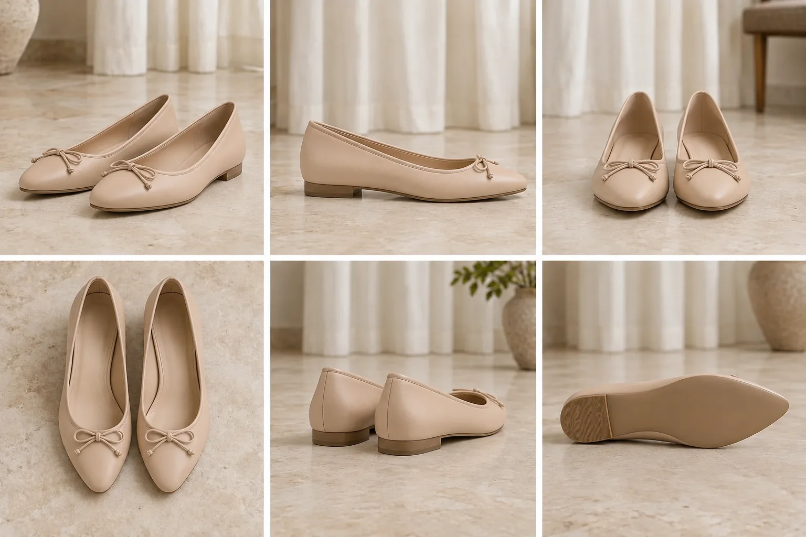

El calzado visto de cerca
Una publicación editorial independiente dedicada a fijarse en el diseño de los zapatos que tenemos en casa, sus formas y las piezas que construyen cada silueta.
Más que un simple complemento
En la moda habitual, los zapatos suelen tratarse como un simple añadido al conjunto. La atención suele irse a la ropa y el calzado queda en un segundo plano.
En El Par le damos la vuelta a esa prioridad: miramos el zapato como una pieza de diseño con proporciones, equilibrios y decisiones de patronaje propias. Nos interesa entender cómo se dibuja una puntera, la curva del escote o la inclinación y la caída de un tacón. Fijarse en los detalles permite apreciar el calzado por lo que es.
Zapatos con carácter propio, lejos de la última tendencia
No buscamos piezas de pasarela, colecciones intocables ni la constante rotación de la última tendencia de temporada.
Nos interesan los pares que guardamos en los armarios: modelos que destacan por su silueta, un corte singular o un detalle especial que merece verse de cerca. El interés de un zapato está en sus formas, en sus líneas y en sus proporciones, no en la marca ni en la etiqueta.
Por qué empezamos por tacones y bailarinas
Abrimos la colección centrándonos en zapatos de salón, tacones y bailarinas por la variedad de sus formas: es donde se concentran más detalles y donde más matices encontramos a simple vista.
En una bailarina, un cambio de dos milímetros en la altura de la pala o el recorte de los laterales altera por completo el dibujo del empeine. En un tacón, la curva del arco, la inclinación y el grosor del propio tacón transforman por completo su estética. Empezamos aquí porque es donde hay más matices que aprender a leer.
El Par no se detiene aquí: este es nuestro punto de partida, pero la colección irá incorporando otras siluetas y tipologías a medida que la publicación crezca.


Dos formas distintas de entender la silueta: la elevación y las curvas del tacón frente a la línea continua de una bailarina.
Fotografías como las que mandarías a tus amigas
Todo el material visual de El Par proviene directamente de las personas que deciden compartir sus zapatos con la publicación.
No trabajamos con imágenes de catálogo. Son fotografías tomadas con el móvil en casa, igual que si le estuvieses enseñando tus zapatos a unas amigas para que vean cómo son.
Sugerencias, ideas y colaboraciones
Esta publicación se construye paso a paso con la comunidad. Si tienes en mente algún tipo de calzado que crees que deberíamos analizar, si conoces una silueta singular o simplemente quieres compartir una recomendación o duda con nosotros, puedes escribirnos cuando quieras.
¿Te gustaría ver aquí un par tuyo?
Si tienes en el armario unos tacones, bailarinas o salones con características singulares y te apetece que los analicemos en la publicación, el proceso lleva menos de diez minutos.